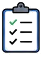
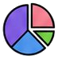

5つの質問に答えるだけ！ライフスタイルに合わせて最適なカードを無料で診断・比較できます。年会費・還元率・特典をスコアリングし、おすすめTOP3をご提案します。
※ 個人情報の入力は不要・すべてブラウザ内で完結します
5つの質問からあなたにピッタリのカードを分析します
スコアと理由付きでわかりやすく比較できます

年会費・還元率・特典など重要ポイントを比較
気になるカードの申し込みページへ直行できます
診断結果は自動保存。いつでも続きから再開できます
どのカードが良いかわからない方に
今のカードが本当にお得か確認したい方に
還元率や特典を重視して選びたい方に
年齢層・利用場面・月間利用額・重視ポイント・ライフスタイルを選ぶだけ。最短2分で完了します。
13種類のカードを還元率・年会費・特典など5次元でスコアリングし、最適な順に並べます。
おすすめTOP3をスコアと理由付きで比較。気に入ったカードは公式サイトから申し込めます。
クレジットカードは正しく選べば家計の強い味方になります。年会費・還元率・特典の違いを理解して、ライフスタイルに合った1枚を見つけましょう。
コスト0で持てるのが最大の魅力。楽天カード・三井住友カード(NL)・JCBカードWが代表格。初めてカードを作る方や、年会費を払いたくない方に最適。
年会費を払う分、旅行保険・ラウンジ利用・高い還元率などの特典が充実。年間利用額が多い方ほどコスパが上がる。三井住友ゴールドNL・JCBゴールドが人気。
特定のスーパー・コンビニで高還元が受けられるカード。イオンカード（イオン系列5%OFF）・セブンカード・プラス（セブン系列で高還元）など。よく使う店舗があれば大きな節約効果。
マイルが貯まりやすく、空港ラウンジや旅行保険が充実したカード。ANAカード・JALカードが代表格。年に数回飛行機を利用する方はマイル還元率を比較検討する価値あり。
| カード名 | 年会費 | 基本還元率 | 特徴・最大の強み | こんな人に向く |
|---|---|---|---|---|
| 楽天カード | 無料 | 1.0% | 楽天市場で3〜最大16%還元。ポイント経済圏最大 | 楽天市場・楽天サービスをよく使う方 |
| 三井住友カード(NL) | 無料 | 0.5% | コンビニ・マクドナルドで最大7%還元 | コンビニ・外食をよく利用する社会人 |
| JCBカードW | 無料 | 1.0% | Amazon・セブン等で2〜10倍還元（39歳以下限定） | Amazonをよく使う39歳以下の方 |
| イオンカード | 無料 | 0.5% | イオン系列でいつでも5%OFF・毎月20日30日5%OFF | イオン・マックスバリューをよく使う方 |
| PayPayカード | 無料 | 1.0% | Yahoo!ショッピングで5〜最大15%還元 | PayPay・Yahoo!ショッピングをよく使う方 |
| 三井住友ゴールドNL | 5,500円 年100万利用で翌年無料 |
0.5% | コンビニで7%・空港ラウンジ無料・旅行保険充実 | ゴールドカードの特典を活用したい方 |
※ 上記は2026年6月時点の情報。各カードの最新情報・キャンペーンは公式サイトでご確認ください。
複数のカードに分散するとポイントが溜まりにくく、管理も大変になります。日常用と特定用途（ネット通販等）の2枚に絞り、ポイントを集中させましょう。
水道光熱費・スマホ代・サブスクリプション等の固定費をカード払いにするだけで、毎月自動的にポイントが貯まります。意識しなくても年間3,000〜5,000円相当のポイントが貯まることも。
楽天カードの「5と0のつく日」（楽天市場でポイント3倍）、イオンカードの「20日・30日」（5%OFF）など、特定日や定期キャンペーンを事前に把握してまとめ買いをする。
リボ払いの手数料は年15〜18%と非常に高く、ポイントの得以上に損失が大きくなります。一括払いを基本とし、家計管理の範囲内で使いましょう。
多くのポイントには有効期限があります。定期的に残高を確認し、期限が近づいたら優先的に消費しましょう。ポイントを投資信託に自動投資できるカードも増えています。
年会費有料カードを作ったが使用頻度が低く、特典を活かせない状態。解決策：まず年会費無料カードで試し、利用頻度・額が増えてから有料カードへ切り替えを検討する。
特典目当てで複数のカードを作ったが、支払い管理が複雑になり引き落とし残高不足のリスクが生じる。解決策：メインカード1〜2枚に絞り、不要なカードは解約する。
ポイントを貯めようとして必要以上の買い物をしてしまう。解決策：「必要なものを買うついでにポイントを貯める」という意識を持ち、ポイントのために買い物しない。
楽天カードは年会費永年無料で、基本の還元率は1.0%（100円につき1ポイント）。最大の特徴は楽天市場での高還元率です。楽天カードで購入するだけで3倍になり、さらに楽天市場アプリ利用・楽天モバイル契約・楽天銀行口座設定などの条件を組み合わせることで、最大16倍（16%）のポイント還元が可能です。
楽天ポイントは楽天市場・楽天ペイ・ファミリーマート・ローソンなど多くの店舗で1ポイント＝1円として使えます。年間の楽天市場利用額が多い方には、還元額が年間数万円に達することもある強力なカードです。貯めたポイントはそのまま楽天証券で投資信託の購入にも使えるため、節約と資産形成を同時に進めたい方にも向いています。
注意点として、楽天市場以外の通常加盟店での還元率は1%のみです。近所のスーパーや交通系の決済では還元率が高くないため、楽天市場のヘビーユーザーでない場合は他のカードの方がトータルで有利な場合があります。また、国際ブランドはVisa・Mastercard・JCB・American Expressから選択でき、JCBは楽天Edy機能が自動付帯します。
三井住友カード(NL)の「NL」はナンバーレスの略で、カード番号が券面に印字されていないセキュリティ重視の設計です。年会費は永年無料で、通常の還元率は0.5%と低めですが、セブン-イレブン・ローソン・マクドナルド・すき家などの対象店舗でVisaのタッチ決済・Mastercard®コンタクトレス対応の支払いをすると、最大7%のポイント還元が受けられます。
この7%の内訳は、対象店舗でのポイント5%＋スマートフォンのタッチ決済利用で+2%という構成です。つまり、Apple PayやGoogle Pay経由でタッチ決済をすることが最大還元を受ける条件となります。コンビニや外食の頻度が高い20〜30代の社会人にとっては特に恩恵が大きく、毎月の外食・コンビニ代をこのカードに集中させるだけで年間数千円分のポイントが貯まります。
ポイントはVポイントとして貯まり、1ポイント=0.5〜1円で使えます（提携店・電子マネー・ANA・JALマイル等への交換も可能）。また、年100万円以上のカード利用で翌年以降の年会費が永年無料になる「三井住友ゴールドNL」へのアップグレードを目指す入口としても人気のカードです。学生向けの優遇制度もあります。
JCBカードWは18〜39歳の方が申し込めるカードで（カード保有後は40歳以降も継続可能）、基本還元率が一般のJCBカードの2倍（1.0%）です。年会費は永年無料。特に強みなのはAmazonでの利用で、Amazon.co.jpでの購入に対してポイントが常に3倍（1.5%相当）還元されます。さらにJCB特約店のセブン-イレブンやスターバックスでは最大10倍以上の還元を受けることも可能です。
貯まるポイントはOki Dokiポイントで、1,000円利用で2ポイント貯まります。Oki Dokiポイントはギフトカード・キャッシュバック・スターバックスカードチャージ・マイル（ANA・JAL）など多彩な用途で使用可能。JCBブランド特有の国内加盟店の多さと、Jデポ（カード支払い額からの充当）なども魅力です。
デメリットとしては、JCBは海外での加盟店が少ない点があります。国際旅行が多い方はVisaまたはMastercardとの2枚持ちを検討するとよいでしょう。また申込み年齢制限（39歳以下）があるため、40歳以上の方は通常のJCBカードやJCBゴールドを検討してください。
クレジットカード選びで後悔しないために、以下の5つのポイントを必ず確認してから申し込みましょう。
1. ライフスタイルに合った特約店・加盟店があるか：楽天市場をよく使う→楽天カード、コンビニ中心→三井住友カード(NL)、イオンをよく使う→イオンカード、という具合に、自分がよく使う店舗での還元率が高いカードを選ぶのが最重要です。どこで使っても同じ還元率のカードより、特定の場所で高還元のカードを選んだ方が実際のお得感は大きくなります。
2. 年会費と利用額のバランスを確認する：年会費5,500円のゴールドカードは、年間55万円以上利用しないと1%還元での元が取れません。特典（旅行保険・ラウンジ）を加味して判断しましょう。条件クリアで無料になるカードは特にコスパ優秀です。
3. ポイントの使いやすさを確認する：どんなに高還元でも、貯まったポイントが使いにくければ意味がありません。現金同等（キャッシュバック・口座振込）や電子マネーチャージ、日常的に使う店舗での利用が可能かを事前に確認しましょう。
4. 付帯保険・サービスは本当に必要か：旅行傷害保険・ショッピング保険は「あれば助かる」特典ですが、別途保険に入っている場合は重複になります。付帯保険の条件（利用付帯か自動付帯か）も確認することが重要です。
5. 申し込み条件・審査難易度：学生・専業主婦・フリーランスでも申し込めるカードか確認しましょう。楽天カード・イオンカードは審査が通りやすい部類です。ゴールドカードや上位カードは安定した収入がある会社員向けが多い傾向があります。
10代・学生向け：学生専用カードは審査が通りやすく、学生特有の特典が充実しています。三井住友カード学生向けは対象コンビニで高還元に加え、学生支援プログラムが充実。JCBカードWも39歳以下対象で学生申込可能です。初めてのカードとして年会費無料・シンプルな構造のものを選び、使いすぎに注意するために利用明細をこまめに確認する習慣をつけることが重要です。
20〜30代・社会人向け：通勤・外食・ネット通販など利用シーンが多様化する時代です。よく使う店舗の還元率が高いカードをメインに選び、サブカードで補完する戦略が有効です。この時期にゴールドカードの「年100万円修行」（利用条件を達成して翌年から年会費永年無料を獲得）に挑戦するのもよい選択です。
40〜50代：収入が安定し、旅行や趣味への支出が増える世代です。旅行付帯保険・空港ラウンジサービスが充実したゴールド・プラチナカードを検討する価値があります。また、この世代はマイルを活用した国内外旅行が多くなるため、ANAカード・JALカードとの組み合わせも選択肢に入ります。
60代以上・シニア向け：年金生活を見据えた家計管理が重要です。医療費・薬局での優待があるカードや、スーパーでの割引優待が受けられるカード（イオンカード・シニア特典付きカード等）が便利です。海外旅行保険が充実したカードを持っておくと、シニア世代の旅行でも安心です。
クレジットカードは「割賦販売法」「消費者契約法」等の法律で保護されています。悪用・詐欺に遭った場合の対応方法を知っておきましょう。
不正利用への対処：カード番号が漏洩して不正利用された場合、カード会社へ即座に連絡することで補償が受けられます。多くのカードは届出前60日間の不正利用分も補償対象です（会員規約による）。明細書を毎月確認し、身に覚えのない請求がある場合は速やかにカード会社へ報告しましょう。
フィッシング詐欺への注意：「カード情報の確認が必要です」等のメールは詐欺が多いです。カード会社の公式サイトには直接アクセスし、メールのURLをクリックしてログインしないことが基本です。三井住友カード・楽天カード等は公式アプリを提供しており、そちらで残高・利用明細を確認することをお勧めします。
使いすぎを防ぐ仕組み作り：利用限度額をあえて低く設定し、毎月の支払い可能な範囲でのみ利用するよう管理しましょう。スマートフォンアプリで利用通知をオンにしておくと、リアルタイムで使用状況を把握できます。家計簿アプリとカード連携することで、月末に明細を確認する手間が省け、支出の全体像が見えやすくなります。
5つの質問に答えるだけ。会員登録もログインも不要です。
クレジットカードをただ使っているだけでは、本来受け取れるはずの特典の多くを見逃してしまいます。以下のテクニックを実践することで、同じ支出でも年間数千円〜数万円分のポイントを多く獲得できます。
ポイントサイト（ポイ活）の活用：ポイントサイト（ハピタス・モッピー等）経由でクレジットカードを申し込むと、通常の入会ポイントに加えて、ポイントサイトからも数千〜数万ポイントの報酬が受け取れます。例えばあるカードに直接申し込むと5,000円相当のポイントが付くところ、ポイントサイト経由では合計15,000円相当以上になることもあります。新規申し込みの際は必ずポイントサイトを経由することをお勧めします。
家族カードの活用：多くのカードは家族カードを無料または低コストで発行できます。家族全員の利用分が一つのアカウントのポイントとして集約されるため、個人では達成しにくいポイント集中が実現します。例えば夫婦二人でそれぞれ年間100万円利用すると合計200万円分のポイントが集まり、1%還元カードなら年間2万円分のポイントになります。
ETC・電子マネーとの連携：高速道路を頻繁に利用する方はETCカードを発行し、通行料にもポイントを付けましょう。また、楽天カードから楽天Edyにチャージしてその後楽天Edyで支払うと二重でポイントが付くサービス（カード→Edy入金時にポイント付与、Edy払い時にポイント付与）を提供しているカードもあります。ただし2024年改正以降、一部サービスでは二重取りに制限が入っているため最新情報を確認してください。
ボーナスポイント・キャンペーンのフル活用：カード会社は定期的に「ご利用金額に応じたボーナスポイントキャンペーン」「特定加盟店でポイント2〜10倍」「新規入会後3ヶ月間ポイント増額」等のキャンペーンを実施します。メールマガジンの登録やカード会社の公式アプリの通知を有効にしておくことで、こうした期間限定のお得な情報を見逃さないようにできます。
クレジットカードの利用明細は毎月確認する習慣を身につけましょう。明細確認は不正利用の早期発見だけでなく、自分の消費パターンを把握して節約に活かすためにも重要です。
明細を確認する際のチェックポイント：まず、すべての請求項目に心当たりがあるかを確認します。特にサブスクリプションの自動更新は気づかないうちに続いていることが多いです。次に、リボ払い・分割払いが含まれていないか確認します。初期設定でリボ払いになっているカードもあるため、残高が毎月同じような金額で推移している場合は要注意です。また、手数料・年会費の請求月も把握しておきましょう。
キャッシングと一括払いの違いを理解する：クレジットカードの「キャッシング（ATMでの現金借り入れ）」と「一括払いの翌月引き落とし」は仕組みが全く異なります。キャッシングは消費者金融と同様の高金利（年15〜18%）が発生するため、緊急時以外は使わないことが鉄則です。一括払いは手数料なしで利用でき、翌月末（または所定の支払日）に全額引き落とされます。
引き落とし口座の残高管理：カード利用額が引き落とし日に口座にない場合、延滞として信用情報に記録される可能性があります。特に月末・月初の大型購入後は残高に注意してください。支払い日の直前（前日など）に残高確認する習慣か、カード利用額を把握して引き落とし日前に入金できる仕組みを作ることをお勧めします。
クレジットカードには必ずVisa・Mastercard・JCBなどの国際ブランドが付いています。同じカード会社でも国際ブランドによって利用できる店舗・サービスが異なります。
Visa（世界最大のシェア）：世界200以上の国と地域、1億以上の加盟店で利用可能。「海外で一番使いやすいブランド」として知られています。旅行や海外通販に強く、Visaのタッチ決済（コンタクトレス）に対応した店舗も増加中です。三井住友カードはVisaが主力で、タッチ決済での高還元特典もVisaブランドが中心です。
Mastercard（世界第2位のシェア）：Visaと同様に世界中で使えるブランド。「コンタクトレス」決済に積極的で、ラウンジ特典（Mastercard Loungekey）など独自サービスも充実しています。楽天カードはMastercard・Visaを選べます。
JCB（日本発のブランド）：国内ではほぼすべての加盟店で使えますが、海外では加盟店が少ない傾向があります。ただし、ハワイ・グアム・韓国・台湾・シンガポールなどでは加盟店が多く使いやすいです。JCB特約店（セブン-イレブン・Amazon・スターバックス等）での高還元が強みです。JCBカードW・JCBゴールドがJCBブランドの代表格です。
American Express（アメックス）：年会費が高い傾向がありますが、トラベル特典・コンシェルジュサービス・旅行保険の充実度が他ブランドより圧倒的に高いです。ステータスカードとして有名で、プラチナ・ブラックカードは富裕層向けの最上位カードです。加盟店は国内外で増えていますが、Visa・Mastercardより少ないです。
国際ブランドの選び方の結論：日本国内メインで使う方は国内加盟店が充実しているJCBまたはVisa・Mastercardどれでも問題ありません。海外旅行が多い方はVisaまたはMastercardが安心です。2枚目のカードを選ぶ際は、メインカードと異なるブランドにすると万が一の際のバックアップになります。
初めてクレジットカードを作る方には、年会費が永年無料で審査が比較的通りやすい「楽天カード」または「三井住友カード(NL)」がおすすめです。楽天カードは楽天市場でのお買い物に強く、基本還元率も1%と高水準です。三井住友カード(NL)はセブン-イレブンやローソン、マクドナルドなどコンビニ・ファストフードをよく利用する方に向いています。どちらも審査の間口が広く、初めての方でも申し込みやすいカードです。学生の方は「三井住友カード（学生向け）」や「JCBカードW（39歳以下限定）」も良い選択肢です。
初めてのカード選びで最も重要なのは「自分がよく使う店舗やサービスで高還元が受けられるか」という点です。いくら人気のカードでも、自分のライフスタイルに合っていなければ恩恵を受けられません。本診断ツールを使って、あなたのライフスタイルに最適な1枚を見つけてください。
ゴールドカードの価値は「年会費以上の特典・恩恵を受けられるか」で判断します。三井住友ゴールドNLの場合、年会費5,500円に対して、空港ラウンジ無料・最高2,000万円の旅行傷害保険・コンビニでの高還元などの特典があります。特に「年間100万円利用で翌年以降の年会費が永年無料」になる特典は非常に魅力的で、年100万円（月約8.3万円）以上カード払いにできる方は積極的に検討する価値があります。
一般的に、年会費有料カードが元を取れるのは以下のケースです。空港をよく利用する方（ラウンジ利用で1回1,500〜3,000円相当の節約）、旅行が多い方（手厚い旅行保険が適用されるため別途保険加入が不要）、年間利用額が多い方（高還元率の恩恵が大きい）。逆に、カードをあまり使わない方や旅行をほとんどしない方は、無料カードで十分なことが多いです。
ポイントの二重取り・三重取りとは、一回の決済で複数のポイントプログラムから同時にポイントを獲得することです。具体的な例として、楽天カードで楽天市場の商品を購入する場合を考えてみましょう。楽天カード払いでポイント1%＋楽天市場でのショッピングポイント1%＋SPUによる追加ポイントというように、複数のポイントが重なります。上手く組み合わせることで実質10%以上の還元率になることもあります。
ただし、ポイントサービスの改定により二重取りが制限されるケースも増えています。例えば、電子マネーへのチャージに関しては「チャージ時にポイント付与なし」に変更されたカードも多くあります。最新の情報はカード会社の公式サイトで確認することをお勧めします。ポイント二重取りに過度に依存するよりも、基本還元率が高く使いやすいカードを選ぶことが長期的には合理的です。
クレジットカードの審査では「返済能力」と「信用情報」が主に評価されます。審査に落ちる主な原因として、安定した収入がない（学生・無職・フリーランス）、信用情報に延滞・債務不履行の記録がある、同時に複数のカードに申し込んでいる（いわゆる「申し込みブラック」）、クレジットカードやローンの利用履歴がない（スーパーホワイト）などが挙げられます。
対処法としては、まずは審査の通りやすいカードから申し込むことをお勧めします。楽天カード・イオンカード・流通系カードは比較的審査の間口が広いとされています。また、一度に複数のカードに申し込むと「多重申し込み」として信用情報に記録され、全体の審査通過率が下がるため、1枚ずつ申し込むことが重要です。信用情報の問題がある場合は、まず既存のローン・カードの延滞を解消し、その後半年〜1年待ってから再申し込みするのが基本的な対処法です。
複数枚持つメリットとしては、用途によって使い分けてそれぞれの高還元特典を最大活用できる点が挙げられます。例えば「コンビニ・日常使いは三井住友カード(NL)、ネット通販は楽天カードまたはJCBカードW、旅行はゴールドカード」というように役割分担することで、オールシーンでの還元率を最大化できます。また、1枚が使えない場面（海外でVisaが使えない場合にMastercardで対応等）のバックアップとしても有効です。
デメリットとしては、管理が複雑になること、各カードのポイントが分散して有効期限内に使い切れなくなるリスク、支払い管理を怠ると引き落とし残高不足が生じるリスクがあります。2〜3枚程度に絞り、それぞれの用途を明確にすることで、メリットを活かしてデメリットを最小化できます。特に初めてカードを持つ方は、まず1枚をしっかり使いこなしてから2枚目を検討することをお勧めします。
スマートフォン決済（PayPay・楽天ペイ・d払い等）とクレジットカードは競合するものではなく、組み合わせることでさらにお得になります。多くのスマートフォン決済は、クレジットカードを紐付けることができます。例えば楽天ペイに楽天カードを紐付けて決済すると、楽天カードのポイントと楽天ペイのポイントが同時に付与されます（二重取りが可能な場合）。
一方、PayPay残高への入金はPayPayカード以外のカードからはできないなど、スマートフォン決済側の制限もあります。最もお得な組み合わせは「スマートフォン決済の経済圏（楽天・PayPay・d等）に合ったクレジットカードを選び、そのカードをスマートフォン決済に紐付ける」ことです。本診断ではクレジットカードの選択をお手伝いしますが、スマートフォン決済との組み合わせも念頭に置いて選ぶことで、日常の決済をより有利に行えます。
クレジットカードの仕組みを理解しておくことで、より賢く活用できます。クレジットカードとは、カード会社が加盟店に代わって代金を立て替え、後日（翌月や翌々月の締め日・支払い日に）まとめて引き落とす仕組みです。カード会員には「信用（クレジット）」を提供するため、審査で返済能力が確認されます。カード会社は加盟店から手数料を受け取ることで収益を得ており、会員は原則として無料または低コストで決済サービスを利用できます。
クレジットカードのポイント還元率は、一般的に0.5%〜3%程度です。例えば年間の総カード利用額が100万円の場合、1%還元のカードなら1万円分（10,000ポイント）が還元されます。これは年間の「カード利用による節約額」として計算できます。特定の店舗で高還元を受けられるカードを使えば、実質的な還元率が3〜7%になることもあり、年間数万円の節約効果をもたらす場合があります。
信用スコアについても理解しておきましょう。日本では信用情報機関（CIC・JICC・KSC）がクレジットカードやローンの利用・返済情報を管理しています。カードの支払いを延滞すると信用情報に記録（いわゆる「傷」）がつき、将来のカード審査・住宅ローン審査・自動車ローン審査に影響する可能性があります。反対に、クレジットカードを長期間きちんと利用・返済し続けることが、良好な信用履歴を積み上げることになります。日本では「スーパーホワイト（クレジット利用履歴がまったくない状態）」よりも、適切なカード利用歴がある状態の方が審査で有利になることが多いです。
クレジットカードに付帯する保険についても確認しておきましょう。多くのカードには旅行傷害保険・ショッピング保険（購入品の損壊・盗難を補償）・不正利用補償が付帯しています。ただし保険が「自動付帯」か「利用付帯（対象経費をカード払いした場合のみ適用）」かの違いに注意が必要です。旅行傷害保険が自動付帯のカードは、普段使いしているだけで海外・国内旅行の傷害保険が適用されます。利用付帯の場合は、航空券・ツアー代金等をそのカードで支払った旅行のみが対象となります。カードを選ぶ際は保険の適用条件も確認しましょう。
最後に、クレジットカードは「便利な決済ツール」であると同時に「与信（信用供与）」を受けることでもあるという認識を持つことが重要です。手元にお金がない状態でも購入できるため、ついつい使いすぎてしまう傾向があります。毎月の利用限度を自分で決めて管理し、引き落とし日前に残高を確認する習慣を身につけることで、クレジットカードを賢く・安全に活用できます。本ツールを活用して、あなたのライフスタイルに最適な1枚を見つけ、毎日の支出を賢くポイントに変えていきましょう。
カードを申し込む前に、以下の項目を確認することをお勧めします。年会費は条件次第で無料になる場合でも、その条件（年間利用額・指定サービスへの登録等）が自分にとって達成可能かを確認してください。還元されるポイントに有効期限がある場合は、期限内に使い切れる量かどうかを検討しましょう。旅行保険の付帯条件が「自動付帯」か「利用付帯」かも重要な確認事項です。特にメインカードとして使う場合は、国内外の幅広い店舗で使えるVisaかMastercardブランドを選ぶことをお勧めします。申し込みの際は、在籍確認（職場への電話確認）が行われる場合があるため、会社名や連絡先を正確に記入しましょう。不正利用対策として、カード番号・有効期限・セキュリティコードは他人に教えないこと、フィッシングメールに注意することも大切です。カードを受け取ったら、裏面に署名することを忘れずに。これはカード会員規約でほぼ必須とされており、未署名のカードは使用を断られることがあります。
本診断ツールでは、あなたのライフスタイル（年齢層・よく使う店舗・月間利用額・重視する特典）をもとに、13種類の人気クレジットカードから最適な1〜3枚をスコアリングして提案します。診断結果はあくまでも参考情報ですが、各カードの特徴を比較する上で役立てていただければ幸いです。クレジットカードは長期間使うものなので、キャンペーンや入会特典だけに惑わされず、長期的な使い勝手とコスパで判断することが最も重要です。ぜひ診断を試してみてください。無料・登録不要・個人情報不要で、最短2分で結果が出ます。あなたにとっての「最適な1枚」が見つかれば、毎日の買い物がよりお得で楽しくなります。
クレジットカードの利用明細は、自動的に家計簿の役割を果たします。毎月カード会社から送られてくる明細（または専用アプリ）を確認することで、「どこで何にいくら使ったか」を一目で把握できます。現金払いでは領収書を集めて集計する手間がかかりますが、カード払いなら自動的に記録されます。家計管理アプリ（マネーフォワードME・Zaim等）とカードを連携すると、支出を自動でカテゴリ別に分類してくれるため、どの費目を削減すべきかが一目瞭然になります。
クレジットカードをお持ちでない方や、今より良いカードへの切り替えを検討している方は、ぜひ本診断ツールを活用してください。5つの質問に答えるだけで、あなたのライフスタイルに最もマッチしたカードを提案します。診断は無料・登録不要・個人情報不要。ブラウザだけで最短2分で完了します。カード選びに迷っている方の参考になれば嬉しいです。最適な1枚を見つけて、毎日の支出をよりスマートにポイント還元していきましょう。クレジットカードは賢く使えば、年間数万円の節約と資産形成を同時に実現できる強力なツールです。
クレジットカードを選ぶ際の最も重要なポイントを改めてまとめます。まず自分のライフスタイルを把握すること。毎月どこで何円くらい使っているか（コンビニ・スーパー・ネット通販・外食・旅行）をざっくり把握するだけで、最適なカードが絞り込めます。次に、年会費と年間利用額のバランスを確認すること。年会費0円のカードは誰でも損をしない安全な選択肢ですが、有料カードも条件次第で年会費無料になるものが増えています。三つ目は、ポイントの使いやすさを確認すること。どんなに高還元でも使いにくいポイントでは意味がありません。最後に、セキュリティ面でも安心できるカード会社を選ぶこと。24時間365日の不正利用モニタリング・即時利用停止機能・補償制度が充実しているカードを選ぶと安心です。本診断ツールはこれらの要素を5つの質問で素早く絞り込み、あなたに最適な1〜3枚を提案します。ぜひ活用してみてください。